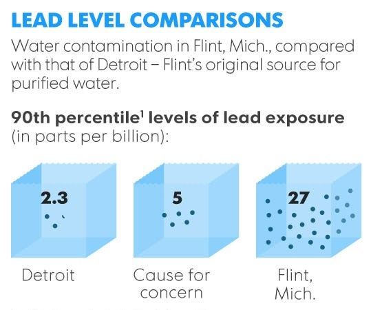
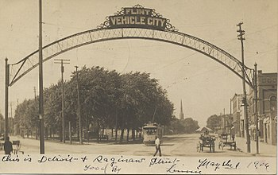
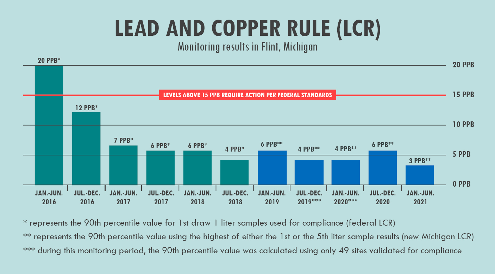

The Crisis
❮
❯
General
The Flint Water Crisis began in 2014 when the city of Flint, Michigan, switched its water supply from Detroit's water system to its own Flint River in an attempt to save money. This water was intended to be used for various functions like everyday amenities and even drinking.
However, the water was not tested for safety and was not treated properly, so water with dangerous levels of lead was sent into thousands of homes, causing many health issues, some of which even resulted in death.
All of this poor decision making lead to a crisis that continues to affect the city today.
The Flint River
This crisis does not come as much of a surprise given the state of the river used.
The Flint River, which flows through the city of Flint, has been used for waste disposal for over a century. People throw both treated and untreated waste into it.
This waste includes:
- - Waste from car factories
- - Waste from meatpacking plants
- - Waste from lumber and paper mills
- - Raw sewage from waste treatment plant
- - Agricultural and urban ripoff
- - Toxics
In fact, there is so much dangerous waste that the Flint River has caught on fire twice.
Besides just this, the water of the river has also not been adequately chlorinated, causing bacteria to thrive. When Flint started sourcing water from it, this led to the third-largest outbreak of a lethal pneumonia variant called Legionnaires' disease, killing 12 people and infecting almost 90. However, chlorinating the polluted water introduced carcinogens into the water, further exacerbating the crisis.
Saving Money
In the middle of the 1900s, Flint's economy was prospering. As the original home of General Motors, it housed almost 200,000 people, with many of them working in the car industry. This drew in many customers and related businesses to the city, further increasing its success.
However, by the 1980s, this economic boom had settled down. Oil prices and auto imports were rising, causing automobile plants to close or fire some workers. Many of these people ended up moving away from Flint, causing the population to drop to just 100,000 people, many of whom were African American. The city's economy declined, with around 45% of the residents dropping below the poverty line. Almost 1 in every 6 hoomes was abandoned. The city had a $25 million deficit.
All of this resulted in a desperate attempt by city officials to cut costs, with the final decision being to stop piping treated water from Detroit to its residents. Instead, they opted to temporarily pump water from the Flint River until a new water pipeline from Lake Huron were built.
Lead
The water in the Flint River is incredibly corrosive. As a result, it essentially carved at the aging pipes that carried it. Since these pipes were made of lead, much of the lead entered the water and was distributed to the thousands of homes relying on the water system.
Lead is a toxic metal, so it can be incredibly harmful to the human body even at low levels. The EPA has even set the maximum contaminant goal for lead in drinking water to zero due to the devastating effects that it can have.
The graph above shows lead levels in Flint's water measured over the years. The issue has definitely lessened, but it still has not gone away entirely.
Why We Care
❮
❯
It Still Matters
Several years have passed since the onset of the Flint Water Crisis, and, as of June 2021, just over 10,000 of Flint's water pipes have been replaced. According to city officials, the city is in the final stage of replacement. However, there is a lot that can be learned from it.
That's because this isn't the only place were this type of crisis has happened and is happening, and we need to be aware of that. In fact, 9 counties nationwide report 10% of tests coming back positive for lead poisoning. From Flint, we should learn that this is incredibly dangerous and should be fixed as soon as possible.
Many cities, much like Flint originally, are also reporting false results on their water quality tests. One of the biggest of these is Philadephia. Other cities like St. Joseph, Louisiana, suffer from terrible levels of pollution, which also affect both air and water quality.
By ignoring these crises like the Flint crisis was originally ignored, we are endangering hundreds of thousands of lives.
Restoring Faith
One of the biggest challenges now facing Flint is restoring faith in its government and water system. Due to the lies and misinformation spread at the beginning of the crisis, even if the water becomes safe to use and to drink again, many people will continue to distrust what officials are saying.
President Obama tried to address this in 2016 by drinking some of the filtered water himself.